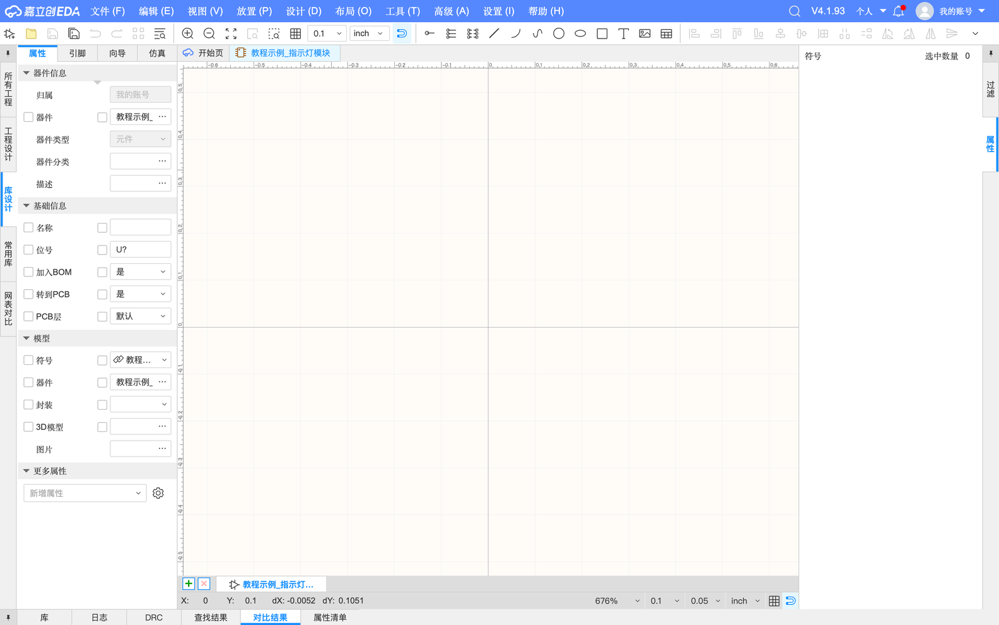
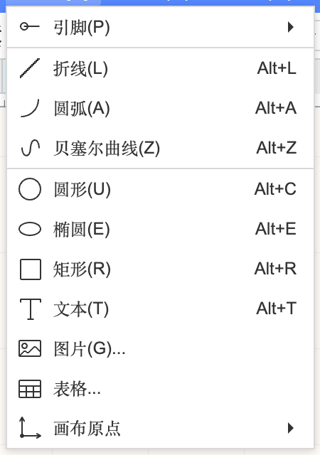
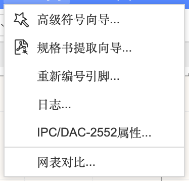
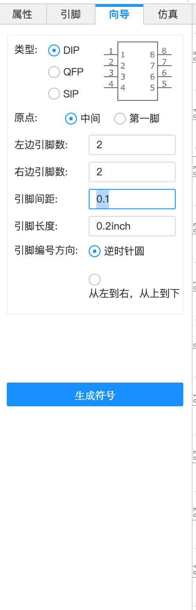
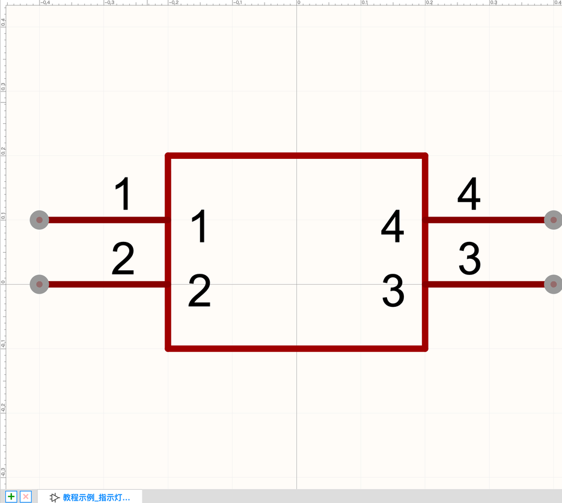
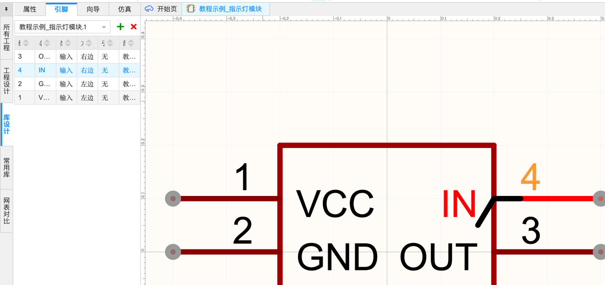
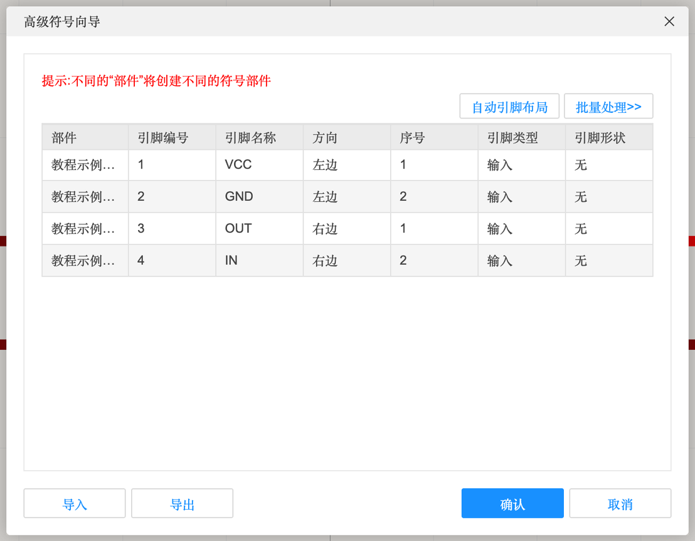
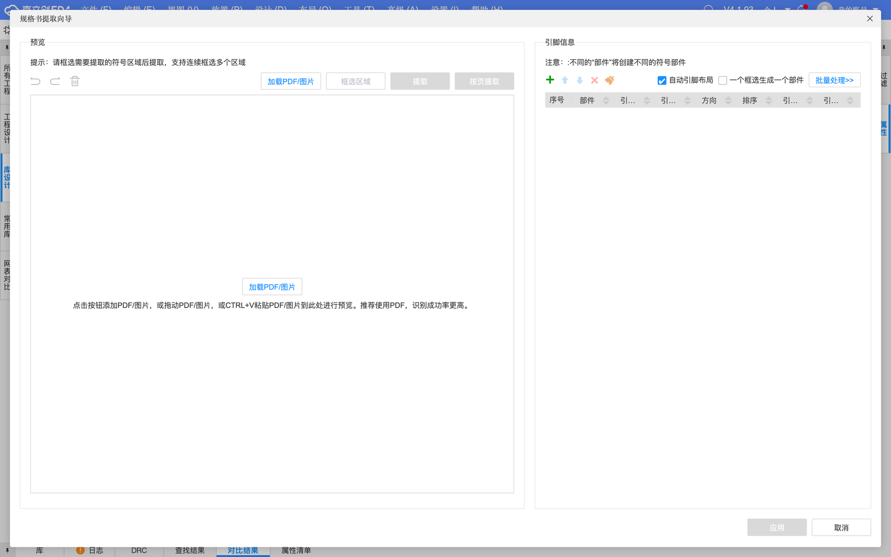

5.2 符号编辑器
符号是元件在原理图里的“简笔画”：一个方框加几只带名字和编号的引脚。这一页讲符号编辑器：用向导一键生成、在引脚表里改名字、以及从规格书自动提取引脚的高级工具。
符号编辑器#

符号编辑器和原理图编辑器长得很像，区别是“放置”菜单里只有画图的东西：


方法一：符号向导（最快）#
- 左侧切到「向导」标签
- 选类型、填左右两边各几个引脚
- 点「生成符号」，提示“生成符号将清空画布当前存在的引脚和其他图元”时点「确认」


符号向导
| 选项 | 含义 | 本例 |
|---|---|---|
| 类型 | DIP：引脚分布在左右两边；QFP：四边都有引脚；SIP：只有一排引脚 | DIP |
| 原点 | 符号的“抓手”放在中间还是第一脚 | 中间 |
| 左边引脚数 / 右边引脚数 | 两边各几只脚（QFP 时会有四边） | 2 / 2 |
| 引脚间距 | 相邻引脚的距离。原理图里统一用 0.1 inch，这样才能对上网格 | 0.1 inch |
| 引脚长度 | 引脚线段画多长 | 0.2 inch |
| 引脚编号方向 | 逆时针绕一圈（像芯片那样）/ 从左到右、从上到下 | 逆时针 |
在引脚表里改引脚#
向导生成的引脚名字默认就是 1、2、3、4。左侧切到「引脚」标签，双击「名称」格子就能改：

引脚表的列
| 列 | 含义 |
|---|---|
| 编号 | 引脚编号，必须和封装的焊盘编号一致（1 号脚连 1 号焊盘） |
| 名称 | 显示在符号里的名字，如 VCC、GND、IO8 |
| 类型 | 输入 / 输出 / 双向 / 电源 / 无源……用于 DRC 判断（例如两个输出连在一起会警告）。不确定就保持默认 |
| 方向 | 引脚在符号的哪一边：左边 / 右边 / 上边 / 下边 |
| 引脚形状 | 无 / 取反圆圈（低电平有效）/ 时钟三角等 |
| 部件 | 多部件器件（如一个芯片里有 4 个运放）每个部件一个符号 |
| 右上角绿色 + / 红色 × | 新增 / 删除引脚 |
方法二：手画#
「放置」→「矩形」（⌥R）画外框，「放置」→「引脚」一只只放引脚（放置时按空格旋转，让引脚“有圆点的一端朝外”——圆点是连线的端点）。不规则形状的符号（比如继电器、变压器）只能手画。
方法三：高级符号向导 / 规格书提取向导#


引脚很多的芯片（几十上百脚）手打太累，用规格书提取向导：把芯片规格书的 PDF 拖进来（或粘贴截图），框选“引脚定义表”或“引脚图”，点「提取」，软件用文字识别（OCR）自动填好引脚表。界面提示“推荐使用 PDF，识别成功率更高”。提取完一定逐个核对，OCR 会认错字。
「布局」→「自动引脚布局…」可以按引脚功能（电源、IO、通信…）自动分组排列，让大芯片的符号更好读。
保存与 DRC#
- ⌘S 保存。符号存在器件里，器件存到你的个人库。
- 符号编辑器也有 DRC（检查引脚编号重复、引脚重叠等），保存前跑一下。